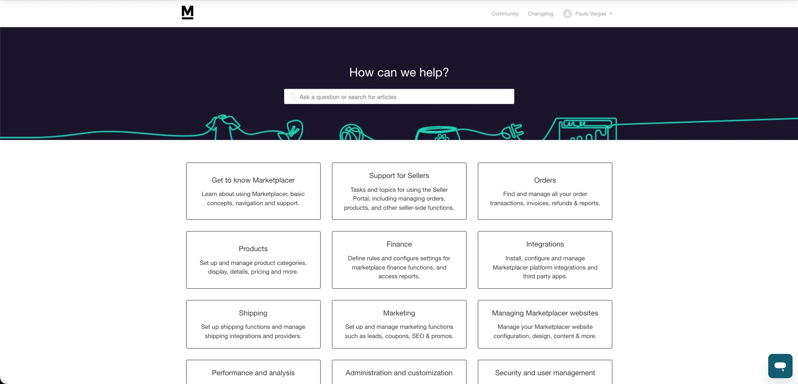
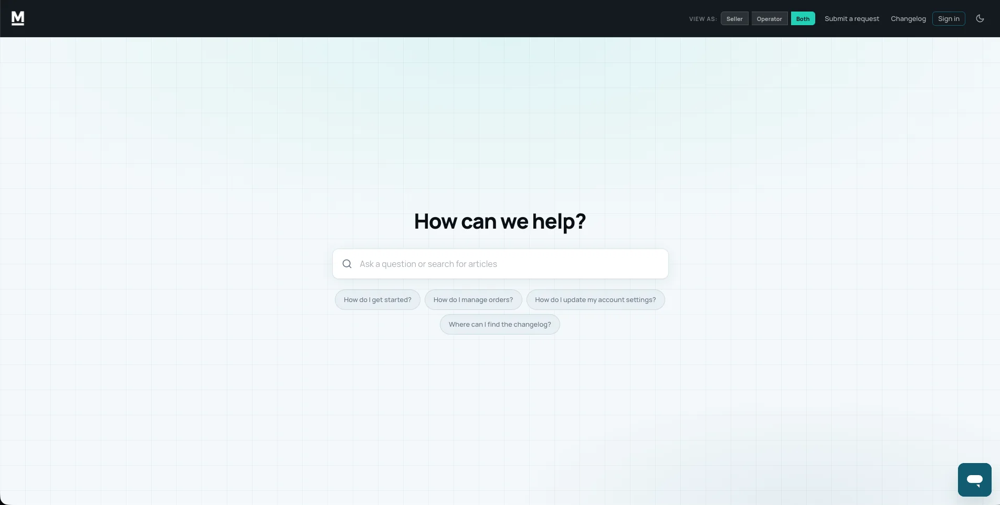

REVIEW / COMPUTING
GMKtec M8 review
I spent about a month using the GMKtec M8 for everyday work and gaming to see how well a compact PC fits into a regular setup.
READ ARTICLE ↗From trying out new gadgets to untangling complex software, I enjoy learning how things work and writing about what I find. I often butt heads with the absurd.
EXPLORE MY WORK ↓I spent about a month using the GMKtec M8 for everyday work and gaming to see how well a compact PC fits into a regular setup.
READ ARTICLE ↗I explored a collection of free creative tools and looked at how they compare with the software they're trying to replace.
READ ARTICLE ↗I tested a Mac app designed to keep cats from accidentally typing on your keyboard. My cats helped with the testing.
READ ARTICLE ↗The Marketplacer Help Center needed a refresh. Its original homepage relied heavily on category cards, and I wanted to create a cleaner experience that made it easier for users to find what they were looking for.


I worked on redesigning the interface with a stronger focus on search, simpler navigation, and a less cluttered layout.
One of the bigger changes was introducing a role selector for Sellers and Operators. Users can choose which role applies to them, so they can focus on documentation relevant to their work. I also added suggested search questions to help people get started without having to figure out exactly what to search for.
The visual changes were fairly substantial, too. I replaced the original dark banner and category-heavy layout with a lighter, more minimalist design that gives the content room to breathe.
The project combined several parts of my work that I enjoy, including technical writing, information architecture, and front-end customization. It was an opportunity to improve the experience around the documentation, rather than focusing solely on the articles themselves.
Hi, I'm Paulo, a writer based in the Philippines.
I started out in technical writing, working on API documentation, knowledge bases, and other resources that help people understand and use software. Over time, I became more involved in how that information is organized and presented, from improving documentation workflows to making help centers easier to navigate.
I also write about consumer technology for Digital Trends. My work includes news, features, product reviews, and opinion pieces. I enjoy getting hands-on with products, researching unfamiliar topics, and finding interesting stories in everyday technology.
While journalism and technical writing are different kinds of work, I enjoy both for much the same reason. I like learning how things work and finding a good way to explain them.
Outside of writing, I'm usually playing video games, tinkering with computers, or spending time with my cats.